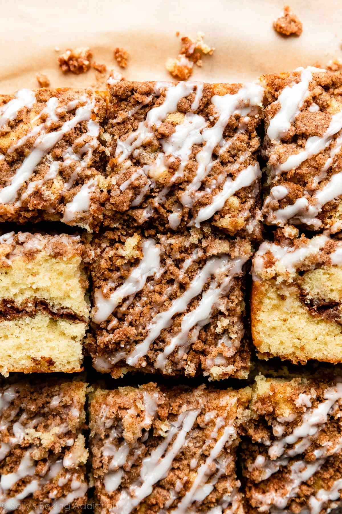

Home
Sour Cream Coffee Cake

Description
This Sour Cream Coffee Cake from Mary Younkin's cookbook, The Weekday Lunches & Breakfasts Cookbook, is a recipe you'll make again and again. With a moist, tender cake and two layers of cinnamon streusel, this morning treat is hard to resist. It is THE perfect accompaniment to your weekend morning coffee!
Ingredients for Cake
- 1/2 cup unsalted butter, room temperature
- 1 cup sugar
- 2 large eggs
- 1 teaspoon pure vanilla extract
- 1 cup all-purpose flour
- 1/2 teaspoon baking powder
- 1 teaspoon cinnamon
- 1/2 cup sour cream
Ingredients for Streusel
- 1 1/3 cups all-purpose flour
- 3/4 cup light brown sugar, packed
- 1 tablespoon cinnamon
- 1/2 teaspoon nutmeg
- 3/4 cup butter, melted
Steps
- Make the streusel by combining flour, brown sugar, cinnamon, nutmeg, and melted butter in a small bowl. Mix everything together with a fork until clumps are formed, then set aside.
- Preheat oven to 350 degrees F and grease a 9x9-inch pan with butter.
- In a medium bowl, whisk together the flour, baking powder, and cinnamon. In a separate large bowl, cream butter and sugar on medium-high speed until light and fluffy, about 3-4 minutes, Add the eggs and vanilla, scraping the sides of the bowl as necessary.
- Add the flour mixture to wet ingredients, then add the sour cream. Mix everything together until well combined.
- Pour half of the batter into the prepared pan and spread it to cover the bottom of the pan with an offset spatula. Sprinkle half of the cinnamon streusel in an even layer over the batter. Finish pouring the remaining batter, then sprinkle the remaining streusel on top of the cake batter.
- Bake for 35-40 minutes until lightly browned and a toothpick inserted in the center comes out clean with moist crumbs. Cool completely on a wire rack before slicing.